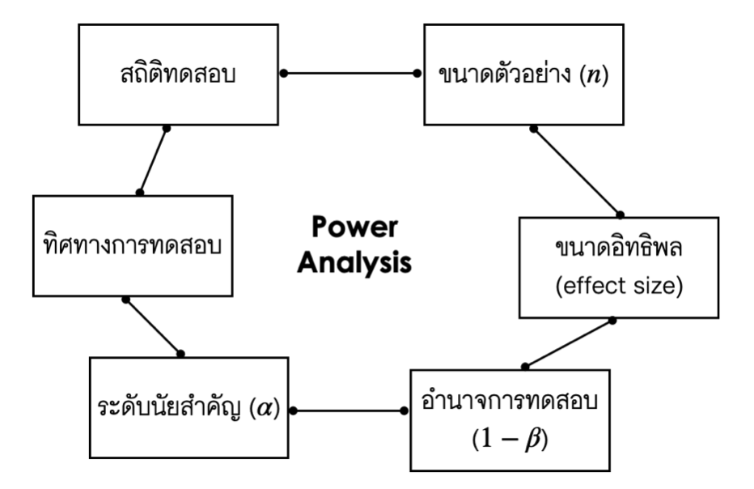

บทนำ
บทความนี้จะกล่าวถึงมโนทัศน์ของการวิเคราะห์อำนาจการทดสอบ (power analysis) การวิเคราะห์อำนาจการทดสอบเป็นเทคนิคทางสถิติที่นำมาประยุกต์เพื่อวิเคราะห์ผลของขนาดตัวอย่างในแต่ละระดับที่มีต่ออำนาจการทดสอบของสถิติทดสอบต่าง ๆ ที่ใช้ในการวิจัย ภายใต้ระดับนัยสำคัญทางสถิติที่กำหนด การเลือกใช้ขนาดตัวอย่างที่มีแนวโน้มจะให้อำนาจการทดสอบอยู่ในระดับสูง จะช่วยให้นักวิจัยหลีกเลี่ยงหรือลดความเสี่ยงที่จะเกิด false negatives หรือความคลาดเคลื่อนประเภทที่สอง (type II error) ปัจจุบันมีการพัฒนาโปรแกรมและ web application จำนวนมากที่สามารถนำมาใช้ในการวิเคราะห์อำนาจการทดสอบได้ ซึ่งมีทั้งโปรแกรมเปิดให้ใช้งานได้ฟรีไม่เสียใช้จ่าย เช่น G*Power, R และ Jamovi และโปรแกรมที่ต้องมีค่าใช้จ่าย เช่น nQuery, PAPP, SamplePower, SAS, SPSS
ที่ผ่านมา G*Power เป็นโปรแกรมที่ได้รับความนิยมอย่างสูงในวงการวิชาการทั้งไทยและต่างประเทศ เนื่องด้วยเป็นโปรแกรมที่เป็นมิตรกับผู้ใช้ ทำให้สามารถเข้าถึงผู้ใช้งานได้เป็นวงกว้าง นอกจากนี้โมดูลภายในโปรแกรมยังมีความยืดหยุ่นและสามารถใช้วิเคราะห์อำนาจการทดสอบของสถิติทดสอบที่หลากหลาย ตั้งแต่ t-test, ANOVA, multiple regression ไปจนถึง multivariate model หลายตัว
อย่างไรก็ตามถึงแม้ G*Power จะเป็นโปรแกรมให้ใช้ได้ฟรีแต่ก็ไม่ใช่ open source ทำให้การพัฒนาปรับปรุงโปรแกรมจะขึ้นอยู่กับทีมผู้พัฒนาเท่านั้น (Axel Buchner, Edgar Erdfelder, Franz Faul และ Albert-Georg Lang) ทำให้ feature การทำงานของโปรแกรมบางส่วนยังมีข้อจำกัด หรือบาง feature ไม่สามารถทำได้บน G*Power เช่น โดยส่วนใหญ่ G*Power ถูกออกแบบมาให้ใช้กับ general linear model สำหรับโมเดลที่อยู่นอกเหนือ framework นี้อาจมีข้อจำกัดหรือไม่สามารถใช้ G*Power ในการวิเคราะห์อำนาจการทดสอบได้ เช่น structural equation model, multilevel model นอกจากนี้อัลกอริทึมการคำนวณอำนาจการทดสอบใน G*Power เป็นการคำนวณโดยใช้วิธีทางการคณิตศาสตร์เป็นหลัก กล่าวคือ เป็นการคำนวณอำนาจการทดสอบจากการแจกแจงความน่าจะเป็นของตัวอย่างสุ่มของตัวสถิติภายใต้สถานการณ์ที่สมมุติฐานทางเลือก (alternative hypothesis) เป็นจริง ทั้งนี้การแจกแจงของตัวสถิติดังกล่าวอาจพิสูจน์ได้ยากหรือหาไม่ได้ในโมเดลการวิเคราะห์ที่มีความซับซ้อน เช่น multilevel model
บทความนี้จะกล่าวถึงการใช้ R สำหรับการวิเคราะห์อำนาจการทดสอบ ปัจจุบัน R เป็นโปรแกรม open source ที่ถูกพัฒนาอย่างต่อเนื่องสำหรับทำงานทางด้านสถิติและวิทยาการข้อมูล โดยได้รับการยอมรับและถูกใช้อย่างแพร่หลายจากผู้ใช้ทั้งที่เป็นนักวิจัย และนักวิชาการในทุกระดับ
ความรู้พื้นฐานเกี่ยวกับการวิเคราะห์อำนาจการทดสอบ (Power of the Test)
หัวข้อนี้จะกล่าวถึงความหมายของอำนาจการทดสอบซึ่งเป็นส่วนประกอบสำคัญในการวิเคราะห์อำนาจการทดสอบ ในทางสถิติคณิตศาสตร์อำนาจการทดสอบของสถิติทดสอบใด ๆ (เขียนแทนด้วย \(T\)) สามารถคำนวณได้ดังนี้
\[ Power = P(|T|>critical \; value| H_0 \; is \; false) \]
สมการข้างต้นแสดงให้เห็นว่า อำนาจการทดสอบของสถิติทดสอบใด ๆ คือความน่าจะเป็นที่ผู้วิเคราะห์จะพบนัยสำคัญที่ถูกต้องจากสถิติทดสอบดังกล่าว ในเชิงเทคนิคลึกลงไปจะพบว่ามีหลายปัจจัยที่มีความสัมพันธ์กับค่าของสถิติทดสอบ \(T\) ได้แก่ ประเภทของสถิติทดสอบ (เช่น t-test, F-test, $\chi^2$ test หรือ exact test) ทิศทางการทดสอบ (one-tailed, two-tailed) ระดับนัยสำคัญ (significance level: \(\alpha\)) ขนาดอิทธิพล (effect size) และขนาดตัวอย่าง (sample size)

นักสถิติใช้ประโยชน์จากความสัมพันธ์ที่พบระหว่างปัจจัยข้างต้นเพื่อวิเคราะห์อำนาจการทดสอบซึ่งโดยมากจะถูกนำมาใช้ในการกำหนดขนาดตัวอย่างสำหรับการวิจัย แนวคิดหลัก ๆ ของวิธีการนี้คือการวิเคราะห์การเปลี่ยนแปลงของค่าอำนาจการทดสอบของสถิติทดสอบที่ใช้ในโมเดลการวิเคราะห์เมื่อขนาดตัวอย่างมีการเปลี่ยนแปลงไป สารสนเทศที่ได้จากการวิเคราะห์จะช่วยให้ผู้วิจัยทราบว่าภายใต้เงื่อนไขของการวิจัย ควรเลือกใช้ขนาดตัวอย่างขั้นต่ำประมาณกี่หน่วยจึงจะรับประกันให้โอกาสของการพบนัยสำคัญที่ถูกต้องของการทดสอบมีอยู่ในระดับสูง
ความรู้พื้นฐานเกี่ยวกับการใช้ R สำหรับการวิเคราะห์อำนาจการทดสอบ
ก่อนใช้ R ผู้ใช้จำเป็นต้องติดตั้ง R และ RStudio ลงบนเครื่องคอมพิวเตอร์ก่อน โดยสามารถดาวน์โหลดโปรแกรม R ได้ที่นี่ ส่วน RStudio สามารถดาวน์โหลดได้ที่นี่
จุดเด่นของ R คือผู้ใช้สามารถดาวน์โหลด package เสริมมาใช้ในการดำเนินงานต่าง ๆ ได้ โดยปัจจุบันมี package ที่สามารถดาวน์โหลดมาใช้งานได้มากกว่า 10,000 ตัว ซึ่งครอบคลุมการดำเนินงานทางด้านสถิติและวิทยาการข้อมูลเกือบทั้งหมด (สิวะโชติ ศรีสุทธิยากร, 2564) สำหรับการวิเคราะห์อำนาจการทดสอบ มีผู้ที่พัฒนา package ขึ้นมาหลายตัว โดยแต่ละ package มีข้อเด่นและข้อจำกัดที่แตกต่างกันไป ผู้วิเคราะห์จึงควรพิจารณาก่อนว่า package ที่กำลังจะเลือกมาใช้นั้นมีความสามารถครอบคลุมการทำงานของตนเองหรือไม่
ใน R มี package ที่นักวิจัยและนักสถิตินิยมใช้เพื่อวิเคราะห์อำนาจการทดสอบหลายตัว ได้แก่
- package pwr โดย package มีจุดเด่นคือใช้งานง่าย มีความยืดหยุ่นในการใช้งานเนื่องจากสามารถกำหนด option ต่าง ๆ ได้พอสมควร ทำให้รอบรับการทำงานที่หลากหลาย อย่างไรก็ตามฟังก์ชันใน package อาจจะยังไม่ครอบคลุมการวิเคราะห์อำนาจการทดสอบของสถิติทดสอบได้เท่ากับใน G*Power
- package powerAnalysis มีความแตกต่างจาก package pwr คือมีฟังก์ชันเฉพาะสำหรับการวิเคราะห์อำนาจการทดสอบในการวิเคราะห์ที่หลากหลายและมีความซับซ้อนได้มากกว่า เช่น repeated measures, mixed-design ANOVA หรือ multivariate ANOVA เป็นต้น
- package “simmer” มีจุดเด่นมากเพราะเป็น package สำหรับการวิเคราะห์อำนาจการทดสอบด้วยเทคนิค Monte Carlo Simualtion วิธีการนี้มีความแตกต่างไปจากการวิเคราะห์อำนาจการทดสอบแบบดั้งเดิมที่จะอิงกับบทพิสูจน์และทฤษฎีการแจกแจงความน่าจะเป็นของตัวแปรอย่างสุ่มเพื่อหาอำนาจการทดสอบ